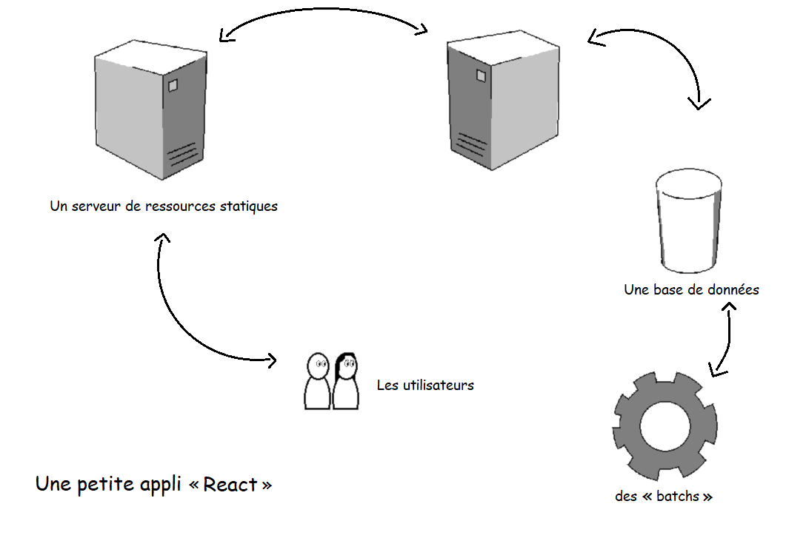
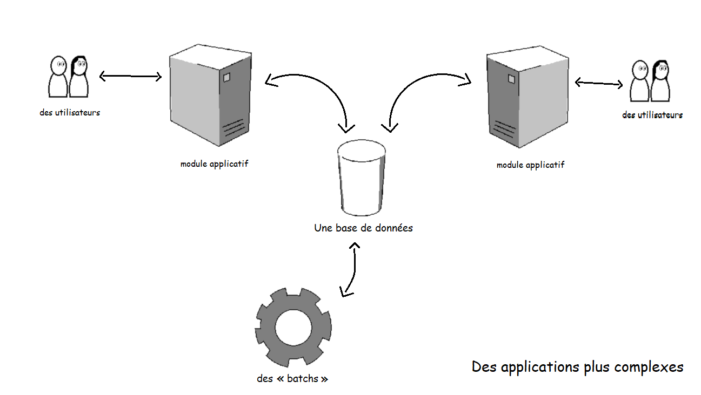

I - L'architecture monolithique
« Un monolithe est un bloc de grandes dimensions constitué d'un seul
tenant. »
Dans la pratique, une situation plus nuancée.
Les petites application « React »

Des applications souvant plus complexes

Les bénéfices de la simplicité
- conforme à notre formation et nos compétences
- plus simple à bien des égards
- moins couteux à court terme
Oui mais, ...
- maintenance complexe
- obsolécense inévitable
- couteux à long terme
II - Quelques principes et patterns d'architecture
Single Responsability Principle
Command Query Response Segregation
orchestration et chorégraphie